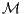
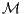

1. Remarque : dans le cas non commutatif, il faut effectivement construire  comme
le bi-commutant  ′′ de (qui, dans le cas non commutatif, diffère du commutant
′.)
′′ de (qui, dans le cas non commutatif, diffère du commutant
′.)
1. Remarque : dans le cas non commutatif, il faut effectivement construire  comme
le bi-commutant ′′ de (qui, dans le cas non commutatif, diffère du commutant
′.)